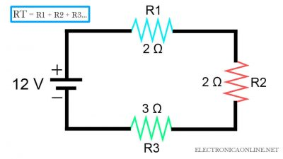
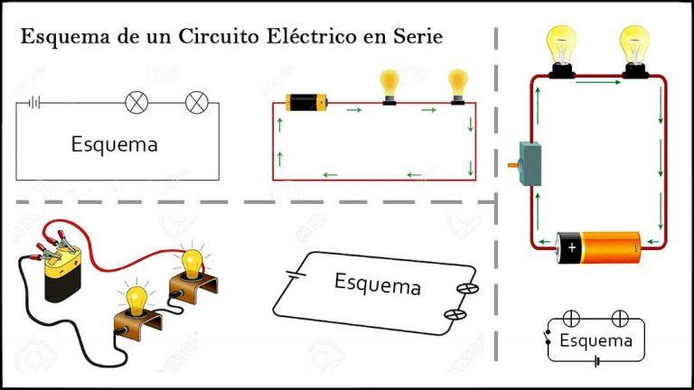

¡Bienvenidos Estudiantes!
Si quieren ver más temas relacionados a la física pueden ver el temario accediendo nuevamente al apartado superior y seleccionando el tema de su elección.

Un Circuito Eléctrico en Serie se caracteriza por tener solo una única ruta para el flujo de corriente. Solo hay una forma en que la corriente puede fluir, no hay rutas alternativas y eso hace que este sea un circuito en serie.
Una definición de circuito en serie es aquel circuito que posee más de una resistencia, pero solo un camino a través del cual fluye la electricidad (electrones). Desde un extremo del circuito, los electrones se mueven a lo largo de un camino sin ramificaciones, a través de las resistencias, hasta el otro extremo del circuito. Todos los componentes de un circuito en serie están conectados de extremo a extremo.
Ya que solo hay una ruta para el flujo de corriente, cada componente tiene la misma corriente que fluye a través de él, como lo hace en todo el circuito. Ese es un aspecto importante del circuito en serie.
En el siguiente ejemplo, las resistencias son las bombillas. En una conexión en serie, los componentes están dispuestos en una línea, uno tras otro.
Echa un vistazo al siguiente diagrama de circuito en serie:
El dibujo esquemático es una mejor manera de dibujar un circuito en serie.
Cada vez que hay daño (rotura) en cualquiera de las resistencias, el circuito completo no funcionará. Por ejemplo, si una bombilla se apaga, todas las demás se apagarán porque se corta el paso de la electricidad en la bombilla rota.
Resumiremos las tres principales características de los circuitos eléctricos en serie que debes entender:
Otras Características:
Los elementos que componen un circuito eléctrico en serie son los siguientes:
Las formulas mas utilizadas en los circuitos en serie son las siguientes:
La resistencia total de un circuito en serie es igual a la suma de las resistencias individuales.
En un circuito en serie, deberá calcular la resistencia total del circuito para calcular el amperaje. Esto se hace sumando los valores individuales de cada resistencia eléctrica en serie.
En este ejemplo tenemos tres resistencias. Para calcular la resistencia total usamos la fórmula:
R1 + R2 + R3 = RT
2 + 2 + 3 = 7 Ω
Resistencia Total es 7 Ω
Ahora, podemos aprender a calcular la Intensidad de Corriente de un circuito en serie.
Recuerde que la Ley de Ohm es I = V / R. Ahora modificaremos esto ligeramente y le diremos que I = V / R Total.
Sigamos con nuestra figura de ejemplo:
RT = R1 + R2 + R3
RT = 7 ohmios
I = V / RT
I = 12V / 7 Ohmios
I = 1.7 Amp
Si ya tuviéramos el amperaje y quisiéramos conocer el voltaje, también podemos usar la Ley de Ohm.
V = I x R total
V = 1.7 A x 7 Ohms
V = 12 V
Digamos que una batería está suministrando 12 voltios a un circuito de tres resistencias; Cada uno tiene un valor de 2, 2 y 3 ohmios. De acuerdo con las reglas anteriores, determinamos la resistencia total:
RT = R1 + R2 + R3 = 2 + 2 + 3 = 7 Ohms
A continuación calculamos el amperaje en el circuito:
I = V / RT = 12V / 7 Ohms = 1.7 Amp
Ahora que sabemos el amperaje para el circuito (recuerde que el amperaje no cambia en un circuito en serie) podemos calcular la caída de tensión en cada resistencia utilizando la Ley de Ohm (V = I x R).
VR1 = (1.7 A) (2 Ω) = 3.4 V
VR2 = (1.7 A) (2 Ω) = 3.4 V
VR3 = (1.7 A) (3 Ω) = 5.1 V
El voltaje aplicado a un circuito en serie es igual a la suma de las caídas de voltaje individuales.
X V total = V1 + V2 + V3 …
En nuestro ejemplo anterior, esto significa que:
3.4 V + 3.4 V + 5.1 V = 11.9 V = 12 V
¿Colocas luces de Navidad en los árboles en casa durante la Navidad? Si las luces están en un circuito en serie, una bombilla quemada mantendrá todas las luces apagadas. Esa es una desventaja de los circuitos en series. Sin embargo, una ventaja es que siempre se sabrá si hay una interrupción en un circuito en serie.
Veamos algunos ejemplos con imágenes de circuitos eléctricos en serie en la vida cotidiana:
Los calentadores de agua utilizan un circuito en serie. La energía entra por el termostato, que es un interruptor de control de temperatura. Cuando el agua alcanza la temperatura correcta, el termostato cortará la corriente al elemento de calefacción, dejando la corriente sin otros caminos a seguir.
Las lámparas también funcionan en un circuito en serie. La energía fluye desde el tomacorriente al interruptor, a través de la bombilla y de vuelta al tomacorriente. Cuando se enciende el interruptor, la corriente fluirá hacia la bombilla. La corriente solo puede seguir un camino.
Tanto los congeladores como los refrigeradores utilizan conexiones en serie. Los elementos en este circuito son el compresor y el interruptor de control de temperatura. Si la temperatura dentro del congelador o refrigerador se calienta demasiado, el interruptor de control de temperatura encenderá el compresor hasta que la temperatura baje. Una vez que se alcanza la temperatura correcta, el interruptor volverá a apagar el compresor.
Otro ejemplo son las luces de navidad, donde el alimentador viene dado por el tomacorriente (fuente de poder), seguido por los conductores y pasando a través de las bombillas.

Un Diagrama o Esquema Eléctrico es una representación gráfica de un circuito eléctrico. Donde se muestra los diferentes componentes del circuito de manera simple. Por ejemplo en la siguiente imagen se puede observar un diagrama de el circuito eléctrico en serie.
Si hay muchas bombillas en un circuito con una batería (celda), es muy probable que la luz sea más tenue porque muchas resistencias están actuando con el mismo voltaje de energía de la batería.
En el siguiente vídeo veremos como funciona un circuito en serie: